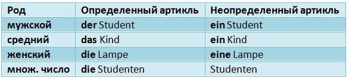

Грамматика
На Deutsch Online немецкая грамматика объясняется живым и доступным для понимания языком!
Данный справочник предназначен как для начинающих (поскольку не предполагает у читателя никаких предварительных познаний в немецком языке и вводит материал последовательно и постепенно), так и для совершенствующих свой немецкий (поскольку содержит подробный материал вплоть до тонкостей, в которых путаются и сами немцы).
В немецком языке не бывает просто дерева. Может быть либо ein Baum [айн баум] - одно (какое-либо) дерево, либо der Baum [дэа баум] - то (самое) дерево. Другими словами, перед всеми существительными стоит служебное слово, которое выражает его определенность или неопределенность – определенный или неопределенный артикль. В приведенном выше примере: ein – неопределенный артикль, а der – определенный артикль (мужского рода). Так как же всё-таки определить артикль, запомнить его и употребить правильно?
Давайте рассмотрим примеры: Gibt es hier in der Nähe eine Bar? – Есть ли здесь поблизости (один) бар? Вы употребили неопределенный артикль, так как не знаете, что за бар и есть ли он вообще. Вам ответят: Ja, ich kenne hier eine Bar. – Да, я знаю здесь (один) бар. Это уже, конечно, вполне конкретный бар. Почему же употреблен неопределенный артикль? Дело в том, что неопределенный артикль может означать не только один какой-то (как в вашем вопросе), но и один из (как в ответе). То есть может выражать не только неопределенность, но и принадлежность частной вещи к общему понятию: Это один из баров. Кстати, о пяти лучших барах Мюнхена можно прочитать в нашей статье!